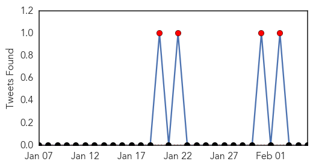

Cholera
30-Day Web Trend
7 alerts, 3 warnings
30-Day Twitter Trend
8 alerts, 0 warnings

Article Locations

Article Confidences

Top Articles:
Top Tweets:
-
No tweets found for Feb 05, 2014
Dengue Fever
30-Day Web Trend
13 alerts, 2 warnings

30-Day Twitter Trend
2 alerts, 0 warnings
Article Locations
Article Confidences

Top Articles:
Top Tweets:
- 0.730
- 2013 outbreak bulletin from WHO AFRO: what is the factor of undereporting by disease? cholera menigitis dengue http://t.co/sTJtWlCmAH